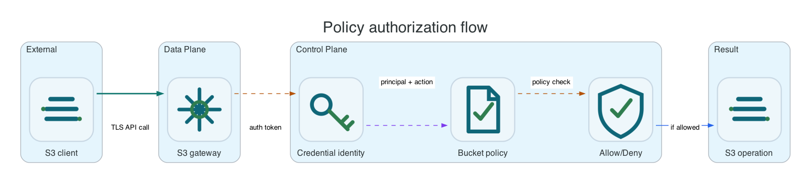

Policies And Authorization
Use S3BucketPolicy for declarative policy management or the S3 policy API for direct client compatibility.
Common AWS CLI setup
Run this once for the target bucket. Replace li9-s3-runtime and app-data with your namespace and S3Bucket resource name.
export NS=li9-s3-runtime
export BUCKET_CR=app-data
export BUCKET="$(oc -n "$NS" get s3bucket "$BUCKET_CR" -o jsonpath='{.status.bucketName}')"
export SECRET="$(oc -n "$NS" get s3bucket "$BUCKET_CR" -o jsonpath='{.status.secretName}')"
export ENDPOINT="$(oc -n "$NS" get secret "$SECRET" -o jsonpath='{.data.AWS_ENDPOINT_URL}' | base64 -d)"
export AWS_ACCESS_KEY_ID="$(oc -n "$NS" get secret "$SECRET" -o jsonpath='{.data.AWS_ACCESS_KEY_ID}' | base64 -d)"
export AWS_SECRET_ACCESS_KEY="$(oc -n "$NS" get secret "$SECRET" -o jsonpath='{.data.AWS_SECRET_ACCESS_KEY}' | base64 -d)"
export AWS_REGION="$(oc -n "$NS" get secret "$SECRET" -o jsonpath='{.data.AWS_REGION}' 2>/dev/null | base64 -d || true)"
export AWS_REGION="${AWS_REGION:-us-east-1}"
export AWS_EC2_METADATA_DISABLED=true
li9s3() {
aws --endpoint-url "$ENDPOINT" --region "$AWS_REGION" --no-verify-ssl s3api "$@"
}To verify the setup, run:
li9s3 head-bucket --bucket "$BUCKET"
li9s3 list-objects-v2 --bucket "$BUCKET" --max-keys 1Policies And Authorization
Li9 S3 authorization has two layers. S3BucketAccess creates scoped credentials and the corresponding managed statement for common application access. S3BucketPolicy owns the full AWS IAM/S3-style bucket policy document when an administrator needs explicit principals, deny rules, condition keys, tag-based access control, or public-read website behavior.

| Use Case | Preferred Interface | Reason |
|---|---|---|
| Application needs read/write credentials for one bucket or prefix. | S3BucketAccess | Creates a Secret and limits actions/resources without hand-writing a full policy document. |
| Security team needs explicit deny, IP/TLS/user-agent/region conditions, or public-read website policy. | S3BucketPolicy | Preserves the AWS policy language and is visible through get-bucket-policy. |
| Existing tool already manages bucket policy through AWS CLI. | S3 API | The runtime stores compatible policy JSON and evaluates it through the gateway. |
cat <<EOF | oc -n "$NS" apply -f -
apiVersion: storage.li9.com/v1alpha1
kind: S3BucketPolicy
metadata:
name: app-data-policy
spec:
s3BucketRef: $BUCKET_CR
policy:
Version: "2012-10-17"
Statement:
- Sid: AllowApplicationReadWrite
Effect: Allow
Principal:
AWS: "*"
Action:
- s3:GetObject
- s3:PutObject
- s3:ListBucket
Resource:
- arn:aws:s3:::$BUCKET
- arn:aws:s3:::$BUCKET/*
EOF
oc -n "$NS" wait --for=condition=Ready s3bucketpolicy/app-data-policy --timeout=10m
li9s3 get-bucket-policy --bucket "$BUCKET"Scoped Access Secret
For day-to-day workload onboarding, prefer a separate access object per application. The operator issues credentials, writes endpoint and region aliases into a Kubernetes Secret, and keeps the policy statement scoped to the selected bucket and prefixes.
cat <<EOF | oc -n "$NS" apply -f -
apiVersion: storage.li9.com/v1alpha1
kind: S3BucketAccess
metadata:
name: reports-writer
spec:
s3BucketRef: $BUCKET_CR
secretName: reports-writer-s3
access:
actions:
- s3:ListBucket
- s3:GetObject
- s3:PutObject
prefixes:
- reports/
EOF
oc -n "$NS" wait --for=condition=Ready s3bucketaccess/reports-writer --timeout=10m
oc -n "$NS" get secret reports-writer-s3 -o jsonpath='{.data.AWS_ENDPOINT_URL}' | base64 -d; echoPolicy Semantics
The evaluator supports explicit allow and deny, principal matching, wildcard actions/resources, NotAction, NotResource, condition operators, tag condition keys, requested region, TLS version, auth type, content hash, user agent, and object-version actions. Policies larger than the AWS bucket-policy limit are rejected before storage. Treat public policies as deliberate production changes and verify get-bucket-policy-status before exposing website content.
li9s3 get-bucket-policy-status --bucket "$BUCKET"
li9s3 head-object --bucket "$BUCKET" --key reports/example.txt || true